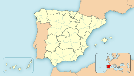

La historia de la villa de La Guardia está en gran medida condicionada por su emplazamiento geográfico privilegiado. Lugar estratégico con abundantes recursos naturales ideal para el asentamiento humano y las fricciones políticas entre estados.
El inicio de la historia de La Guardia empieza con los primeros restos humanos encontrados en la zona. Concretamente fueron en las distintas terrazas que conforman el valle del río Miño donde, sobre el 10000 a. C., empezaron a asentarse grupúsculos de hombres mesolíticos, en la falda del Monte Tecla que llega hasta el río. que se expandieron por el valle y por la costa próxima, zonas propicias para la subsistencia.
Comunica con Portugal por la frontera natural del río Miño por el sureste, con el océano Atlántico por el oeste y con el ayuntamiento de El Rosal por el norte. Es accesible por la carretera PO-552 desde Tuy y desde Bayona, y desde Caminha por transbordador. Se encuentra a 50 km de Vigo y a 120 de Santiago de Compostela.
La altitud a nivel del mar no impiden al Monte de Santa Tecla y al Monte Terroso elevarse sobre 314 m y 350 m respectivamente, permitiendo excelentes vistas, especialmente desde el Monte de Santa Tecla donde se puede disfrutar de la desembocadura del río Miño, el océano Atlántico y los montes de Portugal y Galicia.

| Oia | Index | O Rosal |